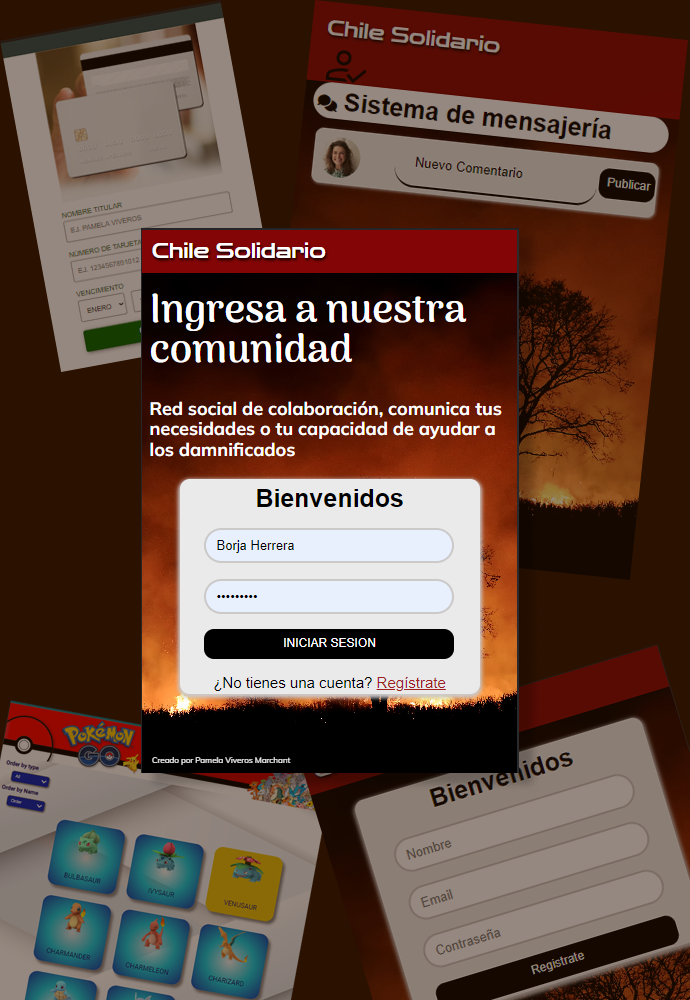

Bienvenidos a
Mi galería
Diseñadora de profesión, emprendedora por determinación y estar en constante crecimiento como Desarrolladora ha sido posible gracias a características como la perseverancia, autonomía, optimismo e iniciativa.
Curriculum